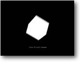

Setting Up Aim: To setup a simple B3D program
|
 |
Blitz3D sits on top of the regular Blitz, instead of learning a totally new set of commands we can use the same programming techniques as we would with a any Blitz 2D program. (which is very handy if you have used Blitz before)
Let's take a look at our first program, before we go any further.
| Graphics3D 800,600 SetBuffer BackBuffer() camera=CreateCamera() CameraViewport camera,0,0,800,600 light=CreateLight() cube=CreateCube() PositionEntity cube,0,0,5 While Not KeyHit(1) TurnEntity cube,.1,.2,.3 UpdateWorld RenderWorld Text 320,500,"First Blitz3D Program" Flip Wend End |
Run the program above if you haven't already, hopefully you'll be confronted with a spinning 3D Cube and a short message. Not bad for only 15 lines of code !!!
So what's happening here ? - lets go through it…
| Graphics3D 800,600 |
Perhaps the most important line of the whole program, this instruction is responsible for initializing the 3d graphics card. As you've probably guessed I'm setting up the screen with the res of 800x600. If you have any problems running the programs then change the values of this command. (as not all graphics cards will be able to use the same res)
| SetBuffer BackBuffer() |
This command is the same as the original Blitz buffer instruction as we use in all our Blitz programs.
| camera=CreateCamera() CameraViewport camera,0,0,800,600 |
These two camera instructions firstly create a standard camera, then setup the variables to respond to the graphics mode we are in.
Why do we need a camera ?, well the standard camera is what we can see. We could have multiple cameras setup in our program and switch between them. For example we could have one setup to follow a character in our program and one that remains static pointing at something. (for instance as a close circuit TV camera)
| light=CreateLight() |
We shed some light on our little scene by defining a standard light, by default B3D will already give us a light (so there's no real need for this instruction) - its just good practise to set things up properly.
| cube=CreateCube() PositionEntity cube,0,0,5 |
To make our little cube, instead of using a 3d modeller program - I've cheated and used the B3D autocreate command to give us a cube.
NOTE: Blitz3D contains a whole host of built in ready-to-use shapes such as Cube, Sphere, Cylinder and Cone. (See doc's for details)
| PositionEntity cube,0,0,5 |
Now we have cube we need to position it, by using the POSITIONENTITY command. As you can see we positioned the CUBE, but we could also use the command to move anything - including the camera. The coordinates are in the format of X,Y and Z. Remember using negative coordinates will move the shape in the opposite direction, for example: PositionEntity cube,3,-2,7 is really moving the cube 3 units to the right, 2 units up and 7 units into the screen. (away from us)
I expect you will use this command mostly in the beginning sections of your programs to move everything in position.
| While Not KeyHit(1) |
The start of our main programming loop, It's good manners to use a loop like this that will quit out when the ESC key is pressed. How many times have you run a program only to find that the only way of quitting out is to restart the computer ?
| TurnEntity cube,0.1,0.2,0.3 |
There's going to be at least 2 commands that your program will rely heavily on, and this is one of them. This little beauty of an instruction turns the cube by the amount giving in the X,Y and Z amounts. In this case X=.1 of a unit, Y=.2 and Z=.3 - as before you use negative commands to spin in the other direction. (and of course you can use the instruction to spin anything, rather than just a shape - such as the camera)
One important thing to remember is that although it rotates the object, the axis rotate with it. For example you designed a rocket pointing up and then rotated it until it was pointing downwards, if you then move the shape in the Y plane (up & down) down would become up !!. It will make sense once you've played around with the examples...
| UpdateWorld RenderWorld |
The UPDATEWORLD command is responsible for updating the coordinates of the entities in our world that may have moved from their last position. (such as moving, rotating and scaling objects) - and controlling any collisions that may have been setup. Without using this instruction, your world would be a very static place. Lastly we use RENDERWORLD to display the scene into our double buffer ready for us to flip into sight with the FLIP instruction.
| Text 320,500,"First Blitz3D Program" Flip Wend End |
This last section of code firstly prints a message to the screen, (which must be done every update in the loop as the buffer is cleared every time the loop repeats). This is a good time to do any other drawing to the screen such as using commands from the original 2d version of blitz. (such as scores or special effects). Now we flip the buffer onto the screen using the old FLIP instruction. The WEND command marks the end of our repeating loop, lastly we come to the END, which as we already know quits the program. (so we must have pressed the ESC key to reach this part in our program)